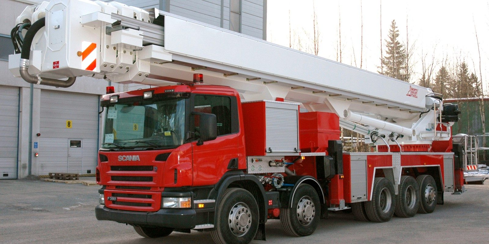

Колінчатий підйомник
Це пожежно-рятувальний автомобіль, який обладнаний стаціонарно встановленою, механізованою, поворотною, колінчатою підйомної стрілою, на останньому ланці якої знаходиться платформа або люлька. Використовується для підйому рятувальних бригад і пожежно-технічного озброєння на необхідну висоту, подачі вогнегасних речовин і евакуації людей.
Пожежна автодрабина
Пожежної автодрабиною називають пожежний автомобіль, на базовому шасі якого встановлена несуча рама з виконавчим механізмом підйомника. Існуючі модифікації пожежних автодрабин мають від трьох до шести висувних прольотів з висотою підйому стріли - 11 ÷ 62 метра. Пожежні автодрабини служать для підйому бойового розрахунку на висоту, евакуації людей, доставки в зону горіння вогнегасних речовин і пожежного обладнання. Стаціонарний висувною підйомно-спускний механізм застосовують при розбиранні конструкцій, моніторингу ситуації. Додаткове коліно сходів, в нічний час доби, використовують для кріплення освітлювальних прожекторів.